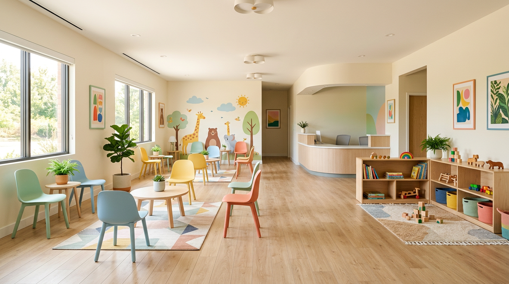

산과
고위험출산, 자연주의 출산, 여성클리닉, 복강경센터, 불임센터, 산후조리원 연계 등 산모와 태아 중심 진료.
자세히 보기Obstetrics & Gynecology Hospital
산모와 아기는 자연입니다. 햇빛병원은 자연주의를 지향하며, 몸과 마음의 안식과 치유를 위한 품격 있는 의료 공간을 지향합니다. 서울 동서북부 유일 보건복지부 인증 산부인과 전문병원으로 오직 한 분에게 집중할 수 있는 진료를 약속드립니다.
빛나는 가치를, 나를 위한 선택으로.Hatvit · Wellness & Care
치유의 시간이 머무는 곳에서 삶의 균형을 되찾으시길 바랍니다.
Clinical Centers
산부인과를 중심으로 소아청소년과·내과·건강검진이 연계되어 가족의 건강을 함께 돌봅니다.
고위험출산, 자연주의 출산, 여성클리닉, 복강경센터, 불임센터, 산후조리원 연계 등 산모와 태아 중심 진료.
자세히 보기내분비·종양·갱년기·부인과 수술·여성건강검진까지 여성 생애주기 전반을 다룹니다.
자세히 보기신생아 케어, 성장발달, 예방접종, 영유아 건강검진 지정기관으로 소아 진료를 제공합니다.
자세히 보기당뇨·고혈압·갑상선 등 만성질환, 위·대장 내시경, 초음파, 종합검진을 시행합니다.
자세히 보기종합·여성·갱년기·임신전·국민건강보험 공단 검진 등 맞춤 프로그램을 운영합니다.
자세히 보기태교·행복분만·모유수유·발도르프·임산부 요가·플라워테라피 등 산모 교육 프로그램.
자세히 보기보건복지부 인증 산부인과 전문병원, 의료기관 평가 인증 등 공신력 있는 기준으로 시설과 진료를 관리합니다.
자연주의 출산 환경과 가족분만실, 수중출산실 등 선택지를 두고 산모의 의견을 존중하는 분만 문화를 지향합니다.
여성·소아·내과 검진이 한 건물에서 연계되어 임신 전후와 가족 단위 예방 의료를 이어갑니다.
프라이빗한 진료 동선과 충분한 상담 시간을 바탕으로, 임신과 출산, 여성 질환, 소아 성장까지 한 건물 안에서 이어지는 케어를 설계했습니다. 응급 분만은 24시간 전문의 상주 체계로 대비합니다.
문화센터와 테라스 정원, 카페가 있는 로비는 치료 공간을 넘어 쉼과 교감이 있는 장소가 되도록 구성되었습니다.
소아청소년과·내과·건강검진센터가 함께 있어 산모뿐 아니라 배우자와 자녀의 건강도 한곳에서 상담할 수 있습니다. 분만 전후 교육과 모유수유 지원, 산후 회복 프로그램이 연계됩니다.

Quick Menu
임신·분만·산후에 이르기까지 단계별로 안내드리는 대표 진료 영역입니다.